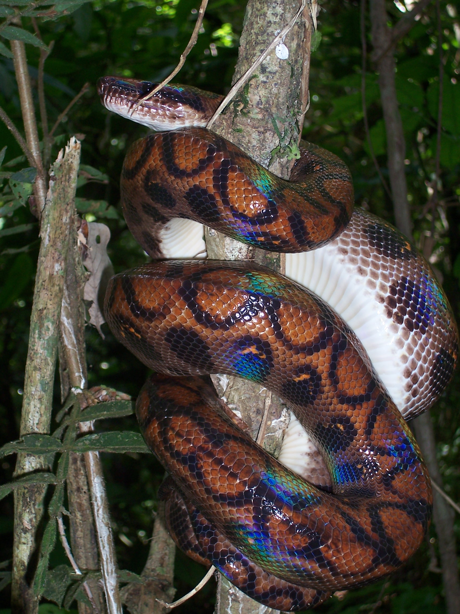
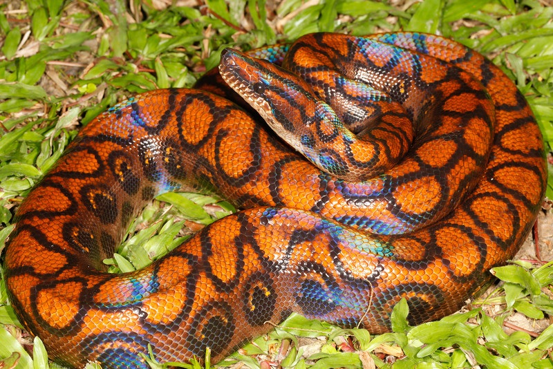
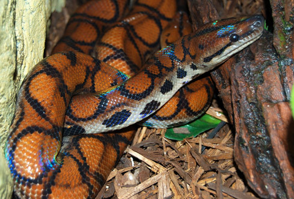
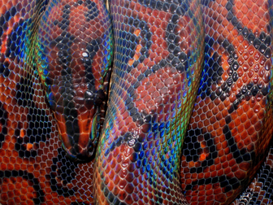
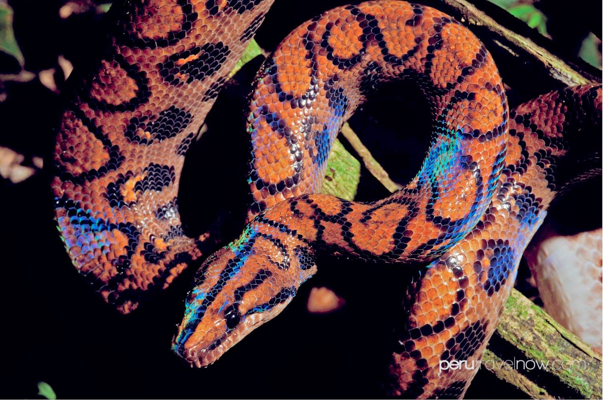
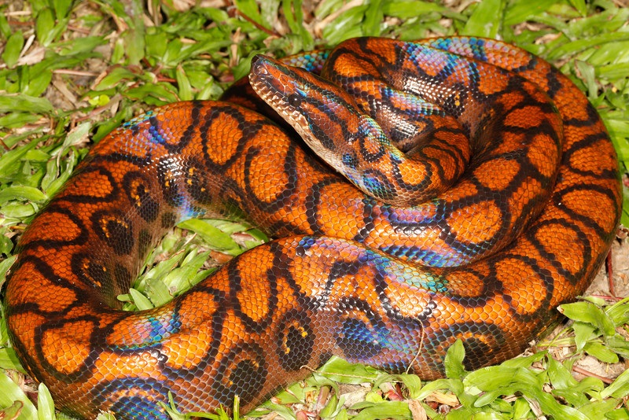
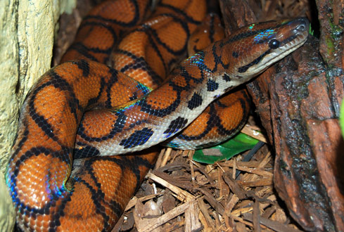
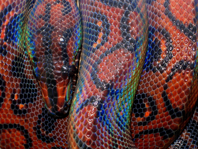
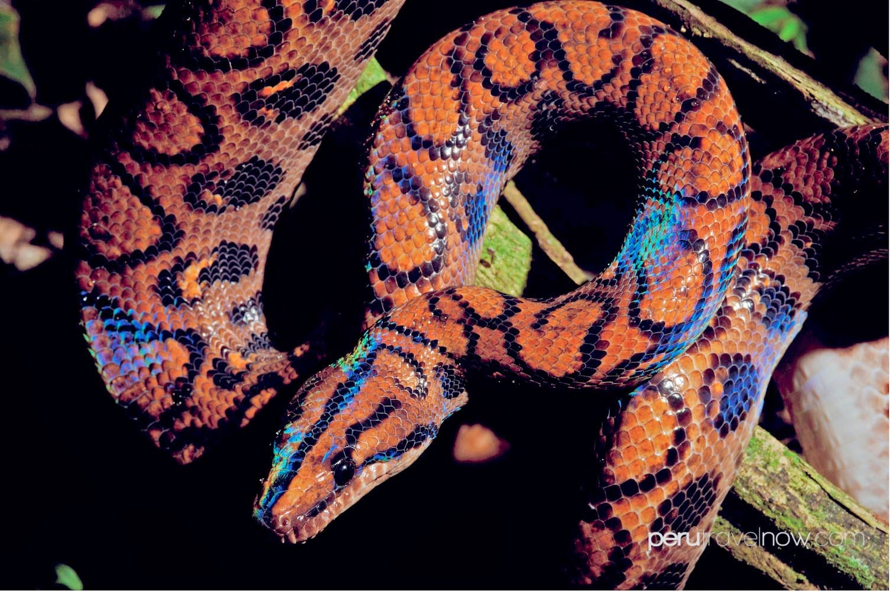

Sección Boa
Volver a InicioBOA ARCO IRIS
(Epicrates alvarezi)
Especie Amenazada
Descripción
La boa arcoíris argentina (Epicrates alvarezi), también llamada boa arco iris chaqueña, boa jarillera, boa enana y boa de terciopelo,1 es una especie terrestre del género Epicrates, de la familia de las boas en el suborden de las serpientes. Habita en regiones cálidas y semiáridas del centro de América del Sur.
Es una serpiente que puede llegar a tener una longitud de hasta 2 m (200 cm) y un peso que ronda los 4.5 kg, siendo, relativamente, de mediano tamaño. Algo que se caracteriza en ellas, es que son delgadas en comparación con otras boas.
Como su nombre lo dice, se le llama así, porque su piel es iridiscente. Se puede ver en la parte de arriba de un color anaranjado que posee ciertas iridiscecias de color azul, verde brilloso y amarillo; en la parte inferior es de color blanco-crema. Este fenómeno óptico es debido a la especial morfología de las escamas; al observar en microscopio óptico el corte transversal de una escama, se puede verificar una ondulación a lo largo de su perfil, lo que produce una descomposición de los rayos de luz, llegando hasta nosotros el reflejo de una serie de múltiples colores.
Alimentación
Es un animal nocturno de costumbres tímidas. Se alimenta especialmente de pequeños mamíferos; complementa su dieta con aves. Mata por constricción. Es voluminosa, lenta y fácilmente irritable. Deambula por el suelo, aunque trepa a los árboles cuando se enfrenta a un potencial peligro, o para buscar refugio en los huecos de los troncos viejos. También revisa huecos similares para alimentarse en nidos de aves, reportándose el consumo de pichones de loro hablador chaqueño
Distribución
- Argentina
- Catamarca
- Chaco (al Oeste)
- Cordoba (Norte y Oeste)
- Formosa (al Oeste)
- Jujuy (en el Este)
- La Rioja (en el Este)
- Salta
- Santiago del Estero
- Tucumnán
- Santa Fe (en el extremo noroeste)
- Bolivia (al Sudoeste)
- Paraguay
- Boquerón
- Presidente Hayes (oeste)
- Alto Paraguay (centro y oeste)
Clasificación
| TAXONOMIA | |
|---|---|
| Reino | Animalia |
| Filo | Chordata |
| Clase | Sauropsida |
| Orden | Squamata |
| Suborden | Serpentes |
| Familia | Boinae |
| Subfamilia | Boinae |
| Genero | Epicrates |
| Especie | E. alvarezi |
Imagenes
 






